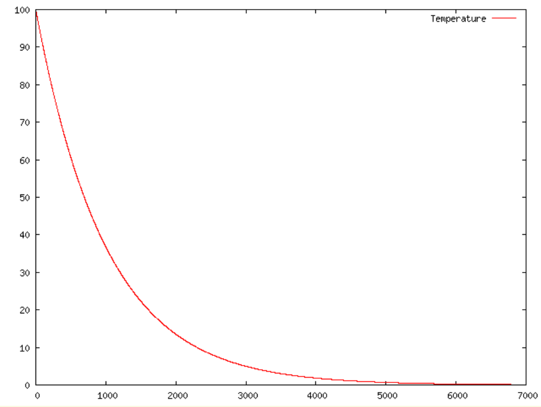
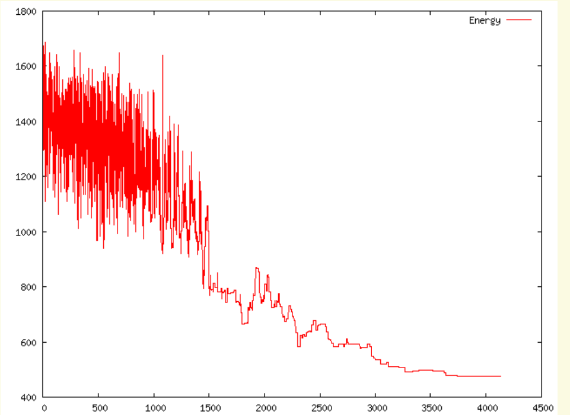
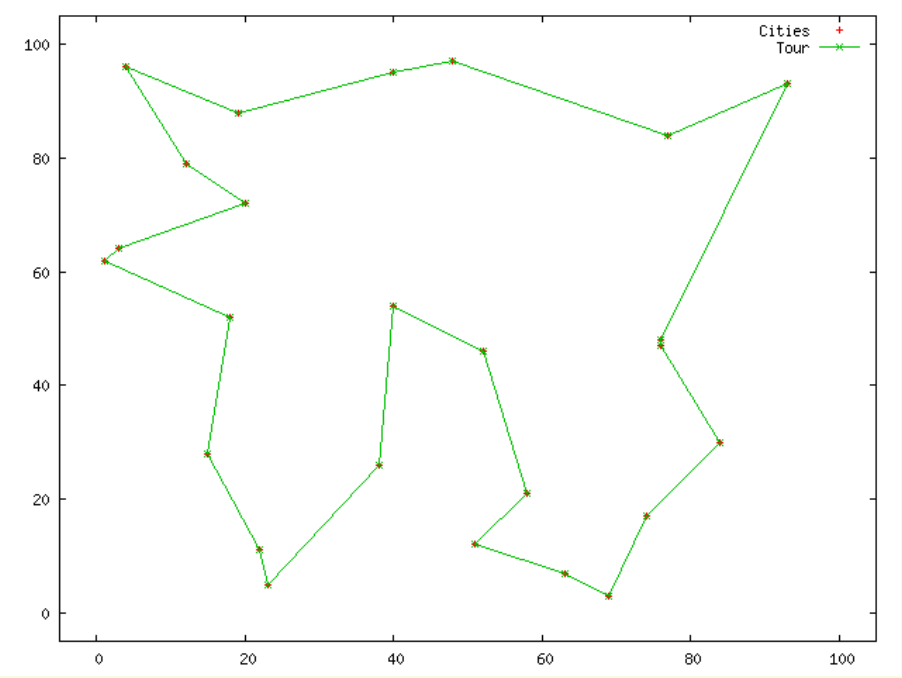

学习路线：从搜索好解，到记住时间
本周有两个不同的问题。单元 A：随机优化与热平衡网络问的是：已经落入一个局部低谷，怎样仍有机会找到更低的能量？单元 B：循环网络的另一用途——ESN 时序建模问的是：怎样让当前预测利用过去的输入，又把训练变成较简单的线性拟合？它们都可能出现循环连接和随机性，但随机性发生的位置、训练对象及运行目的不同。
- 根据候选状态计算能量差，分别用 Metropolis 和 Logistic 规则决定是否接受，并解释温度的作用。
- 手算一次 Boltzmann 单节点更新，从条件概率推出 tanh 期望，再进行一次 mean field 更新。
- 沿 ESN 数据流区分输入、储备池状态、反馈与读出，核对矩阵维度并完成小型时序计算。
- 解释有限退火的局限、echo state property 的含义，并用任务和运行方式区分四类网络。
阅读顺序是“必要基础 → 单元 A → 单元 B → 比较与练习”。正文中的示范默认展开；练习答案可以折叠。窄屏阅读时，较宽的公式、图解和表格可在各自区域内横向滑动。只需会基本代数和加权求和，不需要手边有前几周教材。
主线仅覆盖 Lecture_slides_full semester.pdf，实际页序 223–233 与 242–244。页序从 PDF 第一页算起，不使用页脚编号。234–241 页的 SOM 不重讲，只在末尾比较中回顾。前置回顾不扩展成其他周课程；本周不展开 RBM、深度信念网络、BPTT 推导或模糊系统。
原资料内容指课件已有的概念、公式或图；教学补充指为讲清它们而加入的推导、例子或必要外部知识；经核实的纠正会明确指出冲突位置和核验依据。
评级表示当前范围中的学习依赖：★★★★★ 5/5 核心基础；★★★★☆ 4/5 重要方法；★★★☆☆ 3/5 理解支撑；★★☆☆☆ 2/5 局部拓展；★☆☆☆☆ 1/5 背景补充。每块另给具体理由，不代表考试概率。
必要前置：把本周要用的数学接起来
Energy 与 Local minimum（能量与局部极小）
前置回顾与教学补充；承接第 8 周的能量思想，以本周课件实际页序 223、224、229、231 为落点。
在优化问题中，State（状态）是一个完整候选答案，例如一条经过所有城市的路线，或所有神经元的取值组成的向量。Energy function（能量函数）把每个状态映射为一个实数，约定越小越好；它可以代表距离、误差或约束违反代价，不一定是物理焦耳。
Neighborhood（邻域）规定从当前答案一步能改成哪些答案。只允许一个神经元翻转，就不同于允许整组神经元一起改变。Local minimum（局部极小）意味着邻域里没有更低能量；Global minimum（全局极小）意味着整个可行状态集合里都没有更低能量。前者依赖“允许怎样走一步”，后者依赖整个问题。
这里 是当前状态， 是候选状态， 与 都是标量。负的 是改善，正的是变差，零是持平。本教材始终用“新减旧”，除非明确另设一个能量间隙。若代价以公里计，温度也应采用与之兼容的尺度，让后面的 无单位。
只允许沿相邻节点移动，五个状态能量依次为 6、3、5、1、4。从能量 3 的状态出发，两侧候选分别为 6、5，均变差，于是只接受下降的算法停止。然而能量 1 的状态更好；要去那里，必须先接受 3 → 5，再走 5 → 1。允许一次上升只提供逃离机会，不保证下一步一定找到更低谷。
Probability 与 Conditional probability（概率与条件概率）
前置补充：基本概率定义；为课件实际页序 224–225、231、233 补齐计算基础。
概率 在 0 与 1 之间。例如 表示在同样条件下重复很多次，事件发生比例会趋近 30%，不是“每十次必发生三次”。执行算法时，抽取一个在 0 到 1 之间均匀分布的随机数 ，若 就接受。区间 占整个单位区间的比例为 ，这就是该操作实现概率 的原因。
是事件，交集 表示两件事同时发生；竖线表示“已知”。例如 不是全网络同时变成 +1 的概率，而是其他节点状态已经固定时，第 个节点取 +1 的概率。 表示除了第 个分量外的全部状态。条件变了，概率通常也要重新算。
Exponential function 与 Expectation（指数函数与期望）
前置补充：指数与离散期望的基本性质；对应课件实际页序 224–225、233。
，其中自然常数 。指数总为正，，且 。因此当正数 增大时， 变小。例如 ，。后面把“变差多少相对于当前温度”写成 ，代价相对温度越大，接受它越不容易。
是离散随机变量， 遍历其可能取值； 是各取值按概率加权的平均数。它不一定是一次运行可能出现的值。特别地，当 ，且 时：
若 ，期望为 0.6，但每次观察仍然只能看到 +1 或 −1。这个“二值随机状态 → 连续平均状态”的区别，将是 Boltzmann 与 mean field 的分界。
Time-series state 与 Linear readout（时序状态与线性读出）
前置补充；线性输出与平方误差回顾参照 course_files_export/Tutorials/Perceptron_Adaline.pdf，实际页序 14–15。时序状态用于解释本周课件实际页序 244。
Time series（时间序列）按顺序提供数据。相同的当前输入未必意味着相同的未来：今天都是 20°C，连续降温后的明天与连续升温后的明天可能不同。状态把过去的影响带到当前，例如：
此处 是离散时间步， 是新输入， 是旧状态，均为标量。若初值 0，先输入 1，再输入 0，状态依次为 1、0.5。第二次输入虽为零，状态仍记着第一次的影响。0.5 是固定参数，随时间改变的是状态。
向量只是把多个数排成一列；矩阵乘法就是同时进行多组加权求和。设特征列向量 ，权重 ，一个线性读出写成 。上标 表示转置，把列变成行，结果是标量。若特征第一项固定为 1，相应权重就是偏置。
是训练样本数， 是样本索引， 是目标输出，预测与目标之差是误差。Least squares（最小二乘）选择权重使总平方误差最小；平方让正负误差不抵消，并更重地惩罚大误差。第 3–4 周的线性拟合思想将在单元 B 重用，只是特征变成储备池产生的状态。
单元 A · 随机优化与热平衡网络
Simulated annealing（模拟退火）：暂时变差为什么有用
原资料内容：Lecture_slides_full semester.pdf，实际页序 223、229。
能不能既偏爱好答案，又不永远困在当前低谷？
冶金退火先加热，再缓慢冷却，使材料有机会重新排列。Simulated annealing（模拟退火，SA）借用这个思想：把排列方式对应为候选解，把目标函数对应为能量，把 Temperature（温度）当作控制探索程度的参数。我们不是在计算材料的实际温度，而是在设计搜索过程。
每次先产生一个候选，再比较新旧能量。如果它更好，倾向于接受；如果更差，也保留一个由温度控制的接受机会。这可以让轨迹穿过能量较高的中间状态。随着温度下降，探索变得谨慎，算法逐渐集中于较低能量区域。候选怎样产生与产生后是否接受是两个不同步骤：再好的接受规则，也无法访问候选机制永远到不了的状态。
接下来采用有限状态问题、可达的邻域和对称候选机制作为基础情形。“对称”表示从 提议 与反向提议的概率相同。课件的简单能量接受公式放在这个设定中最容易理解；若提议本身不对称，要另考虑提议概率的修正，不能不加说明直接套用平衡结论。
Acceptance rules（接受规则）：两页课件、两种概率
原资料内容：Lecture_slides_full semester.pdf，实际页序 224–225。
Metropolis acceptance rule（Metropolis 接受规则）对应实际第 224 页。先算新减旧的能量差，再用：
是接受当前候选的概率； 是标量能量差； 是温度。更好或持平一定接受，变差才掷“有偏硬币”。分段不可省略：若把负的 直接代入指数，结果可能大于 1，不能作为概率。
实际第 225 页给的是另一条 Logistic acceptance rule（Logistic 接受规则）：
其中 仍表示接受所提议变化的概率。对于负的能量差它大于 1/2，却并非必为 1；持平时恰为 1/2；变差时小于 1/2。它可用于两状态间的热浴式选择。本教材用公式本身识别规则，不把两个名称相近的随机更新混成同一条公式。
若当前能量 8，候选能量 10，则 。温度 2 时，，所以 Metropolis 概率为 ，Logistic 概率为 。抽得 ：前者接受，后者拒绝。
再把候选改为能量 6，则 。在同一温度 2 下，Metropolis 概率为 1；Logistic 为 。若 ，前者仍接受，后者拒绝一次改善。那是规则允许的随机选择，不是算错。
| ΔE | T | ΔE/T | Metropolis | Logistic |
|---|---|---|---|---|
| −2 | 1 | −2 | 1.0000 | 0.8808 |
| 0 | 1 | 0 | 1.0000 | 0.5000 |
| 2 | 0.5 | 4 | 0.0183 | 0.0180 |
| 2 | 1 | 2 | 0.1353 | 0.1192 |
| 2 | 2 | 1 | 0.3679 | 0.2689 |
| 4 | 2 | 2 | 0.1353 | 0.1192 |
比较最后两行可知，决定概率的是比值：能量尺度翻倍时，温度也翻倍，概率不变。固定正的 ΔE，提高 T 会提高接受变差的概率。
读图时先看横轴 0：两条曲线已经不同；再向右看，两者都下降，Metropolis 始终更高。温度趋于很高时，对固定有限的能量差，Metropolis 接近 1，Logistic 接近 1/2；所以“高温更随机”不等于两者都接近必然接受。
课件写 ，但显示的公式在 没有定义。实际计算用 ；零温指 的极限。此时正 ΔE 的接受率趋于 0，负 ΔE 趋于 1；ΔE = 0 时两规则仍分别为 1 和 1/2。
Tangent（切线）：课件中的 T 和 2T 从哪里来
原资料内容：Lecture_slides_full semester.pdf，实际页序 224–225；以下代数为教学补充。
切线用一条直线描述曲线在某一点附近的变化趋势。令横轴 ，固定 。Metropolis 在 有折角，只看右侧指数分支，其函数值为 1、右侧斜率为 。Logistic 在 0 的函数值为 1/2、斜率为 。于是局部切线分别为：
表示切线的纵坐标，不是新的概率函数。设纵坐标为零，第一条得 ，第二条得 ，这就是两页的横轴截距。课件没有明写切点，这里明确为零能量差处；Metropolis 指右切线。真实曲线在任意有限的正 ΔE、正 T 下仍大于零，并不会在 T 或 2T 突然归零。
Cooling schedule（冷却计划）与一轮完整搜索
原资料内容：Lecture_slides_full semester.pdf，实际页序 226–227、229；流程和数值为教学补充。
一套可执行的 SA 需要初始状态、初温、候选机制、每个温度下的尝试次数、冷却方法及停止条件。常见教学选择是 Geometric cooling（几何冷却）：
是温度层索引， 是无单位冷却系数， 与能量同尺度。每层可以尝试多次，再降低温度。取 比 0.5 冷得慢；但只知道 还不能比较计算预算，因为每层步数也影响搜索。此公式用于演示，不能仅凭第 226 页曲线形状断定其原实验使用了这个具体计划。
- 设当前状态 ，把它也记录为目前最佳状态 。
- 在当前温度 T 下，从邻域提议一个候选 ，计算 。
- 用事先选定的接受规则算 p，抽取 r。若 r < p，令当前状态变成候选；否则保留旧状态。
- 若当前能量刷新最低值，更新最佳记录；在该温度重复到预定次数。
- 降低温度，继续下一层；达到预算或预定停止条件后，返回最佳已见状态及其能量。
“当前状态”允许变差，“最佳已见记录”只会改善或持平。若每一步都从最佳记录重新出发，便失去了已接受的上坡路径，不再是上述过程。
初始能量为 8，采用 Metropolis，每层尝试两次，初温 2、。为便于复算，假定下表各候选都来自当时当前状态的合法邻域；候选与随机数已预先给出。这是四次尝试的教学轨迹，不是某个原课件实验。
| 步 / T | 当前 → 候选能量 | ΔE 与 p | r 与决定 | 更新后当前 / 最佳 |
|---|---|---|---|---|
| 1 / 2 | 8 → 10 | +2；e⁻¹ = 0.3679 | 0.30；接受 | 10 / 8 |
| 2 / 2 | 10 → 7 | −3；1 | 0.80；接受 | 7 / 7 |
| 3 / 1 | 7 → 9 | +2；e⁻² = 0.1353 | 0.20；拒绝 | 7 / 7 |
| 4 / 1 | 7 → 6 | −1；1 | 0.90；接受 | 6 / 6 |
第二步必须用 ，不能拿 7 减最佳记录 8。第三步拒绝后，第四步仍从能量 7 开始。预算耗尽返回能量 6，只能称为“本次找到的最佳值”，没有证据称为全局最优。
再看课件的两张原图：第 226 页红线是 Temperature，第 227 页红线是 Energy。前者从约 100 向 0 下降；后者前段有很大的上下波动，后段逐渐稳定。横轴均有数值刻度但未明确标注物理单位或精确计数定义，因此这里只按运行进展阅读，不将两图强行一一对齐。


能量图中仍出现局部上升，这正是接受变差的表现；标题 Descending Energy 描述整体趋势，并非逐步单调下降。图中后段接近平坦也不能单独证明全局最优：可能已找到很好的解，也可能温度过低而难以逃离局部低谷。
数学上的退火收敛结论需要状态可达性、接受机制及足够慢的冷却等假设，讨论的是无限时间下趋向全局最小集合的概率。Hajek 的结果刻画了冷却速度与能垒的关系。只规定 T 最终趋于 0，并不足以保证成功；有限预算、几何冷却和一次漂亮轨迹都不是最优性证明。
外部核验：Hajek (1988), Cooling Schedules for Optimal Annealing，摘要。此处只补足结论条件，不展开收敛定理证明。
Traveling Salesman Problem（旅行商问题，TSP）
原资料内容：Lecture_slides_full semester.pdf，实际页序 228；四城市演算为教学补充。
TSP 给定城市与城市间的距离，要求每城恰好访问一次并回到起点，使总路程尽量短。可以用城市排列 表示一条路线：
是城市数， 是城市 a 到 b 的距离；k 表示路线位置，E 是总长度。回到起点的最后一条边必须算入。交换两个访问位置或反转一段路线都可以生成候选；使用排列表示能天然保持“一城一次”，不必先加入重复城市的罚项。本节的路线搜索不重做第 8 周 Hopfield 的约束编码。
四城坐标 A(0,0)、B(1,0)、C(1,1)、D(0,1)，距离采用平面直线距离。当前交叉路线 A → C → B → D → A 的四条边长是 ，总长 。交换 C 与 B 后得到 A → B → C → D → A，总长 4。
新减旧得 ，Metropolis 必接受。反过来从周边路线提议交叉路线，温度 ，接受概率为 。所以 SA 并不永久禁止出现更长甚至交叉的路线。这里的 T 采用与边长一致的无量纲教学尺度。

课件第 228 页用红色十字表示 Cities，用绿色线及标记表示 Tour。应沿绿色闭合路线检查是否逐个连接所有城市；横纵轴表示平面位置，单位未给。原图没有完整精确坐标、算法参数或最优性证书，因此它展示“一个样本路线”，不能据此重建精确距离或断言最短。
SA 允许一个一般候选解随机移动。下面把状态改成一组二值神经元，把一次候选限制成“只改一个节点”，就能用网络的局部场计算全局能量变化。
单元 A 续 · 从随机节点到连续平均状态
Boltzmann machine（玻尔兹曼机）：用能量偏好分配状态概率
原资料内容：Lecture_slides_full semester.pdf，实际页序 230–231。
经典 Boltzmann machine（玻尔兹曼机，BM）有相互连接的节点，每个节点取二值。这里沿用课件的 Bipolar state（双极状态） ，用粗体 表示整个 N 节点状态。它与确定性 Hopfield 网络的关键差别，是同样的邻居状态下，节点仍可能随机选取不同输出。
先固定权重、偏置和正温度，只讨论状态如何运行。设 ，且 。定义偏置 与局部场：
，。状态无单位，w、b、h 和 E 采用兼容的能量尺度。对称双重求和把一对连接算了两次，所以前面乘 1/2。正权重让同号节点的连接项较低，负权重偏好异号；正偏置让节点 +1 更有利。课件第 231 页把局部场写作 、外加项写作 ；这里改成 h、b，避免与下一单元 ESN 的输入 u、状态 x 混淆。假设零对角后，局部场不依赖本节点的旧值。
Thermal equilibrium（热平衡）并非每个节点都停止，而是反复随机更新后，整体状态的概率分布不再随时间变化。在固定 T、标准单节点抽样且状态可达的情形下，平衡偏好由 Boltzmann distribution（玻尔兹曼分布）表示：
是每个完整状态的概率； 是把所有状态的未归一化权重相加的正常数，确保总概率为 1； 是求和用的状态变量。较低的 E 产生较大的指数权重。一个节点的更新不需要枚举 Z，因为在条件概率的比值中它会消掉。固定温度是抽样一个分布；逐渐降温则把这种动态用于寻找低能量配置。这两种运行目的要区分。
必要外部补充：Ackley、Hinton、Sejnowski (1985), A Learning Algorithm for Boltzmann Machines，实际 PDF 页序 3–6，§2–2.2。原文采用 0/1 状态，本教材的双极形式依课件能量重新推导，不能直接照搬两种编码的数值因子。
本节改变的是状态 v；权重和偏置保持固定。把网络用于优化时，权重可以由问题代价构造。把它用于生成建模时，还可以从数据学习权重，使生成状态的统计规律接近数据；那是另一个训练过程，本周不展开其学习算法。课件称它是 Hopfield 的随机、生成式对应物，其中“生成式”指可以从所建模的分布产生样本，不等于自动找到所有数据的正确解释。
Historical context（历史背景）
课件第 230 页把这一随机网络联系到 Hinton 与 Sejnowski 的 1983 年工作。Hinton 的作者文献列表确实收录了二人在 1983 年发表的 Optimal perceptual inference；1985 年的经典学习算法论文由 Ackley、Hinton 与 Sejnowski 共同署名。这里区分早期构想与后来发表的学习算法，不把课件括号中的机构名当成 1983 年任职史证据。
原资料与外部核验：课件实际第 230 页；Hinton 的 Boltzmann Machines 作者文献列表；1985 年原论文首页。
Flip energy 与 Conditional update（翻转能量与条件更新）
原资料内容：Lecture_slides_full semester.pdf，实际页序 231；以下为根据能量定义核实的纠正与教学推导。
固定所有其他节点，只让当前节点从 变为 。令 表示这一候选向量。所有不含 的能量项不变；利用对称性，把含它的项合并，能量可写成 ，其中 C 与该节点取值无关。
这里的 始终是旧值。若 h 为正、旧值为 +1，翻到 −1 就要付出正能量差；若旧值为 −1，翻到 +1 会降低能量。这个直觉是检查指数符号最快的方法。
使用第 225 页的 Logistic 规则，真正的“旧值翻成相反值”的概率为：
也可以直接重抽该节点的新值，无须先说“翻不翻”。记其他节点固定时两种局部能量为 、。按指数权重归一化，得：
第二个分式上下同除以 ，所以差是 ；分母指数前因此有负号。若旧值为 −1，新抽到 +1 就是翻转；若旧值为 +1，新抽到 −1 才是翻转。故：
以上概率都以其他节点固定为条件，省略竖线只为排版。两项互补，因为给定同一局部场，新状态只有两个可能值。注意“翻转概率”取决于旧值，而“新值为 +1 的概率”不取决于旧值；这是零自连接设定下的单节点热浴重抽样。
原图正确给出“从 翻到 ”的能量差 ，但下一行的箭头、ΔE 代入和指数负号不能同时成立，末行两个方向的指数符号也与该能量定义相反。本教材不从箭头猜作者原意，统一采用上面“新减旧”的推导。
物理与代数检查一致：h > 0 时，+1 能量较低，应有 。下一节还会得到正的 。若算出负的期望，说明能量、状态编码或指数符号至少有一处未统一。
两个节点，，，初态 ，T = 1。只更新节点 1。先算 。
能量简化为 。旧态能量 ；候选 能量 ；故 ，与 相同。
翻转概率 。若抽得 r = 0.75，接受翻转；若抽得 r = 0.90，则保留 −1。一次改善也可能被拒绝，这是 Logistic 更新，不是 Metropolis。
更新后若再次选择节点 1，邻居未变，h 仍为 0.7，但旧值已为 +1。反向翻转能量差为 +1.4，概率为 。降温到 0.5 时，从 −1 到 +1 的概率变为 ，更偏向低能量状态。
Asynchronous update（异步更新）每次选择一个节点，算局部场、抽新值、写回，再处理下一个节点。若用旧状态一次同时独立更新所有相互连接的节点，通常不能直接保证同一个 Boltzmann 平衡分布。课件第 230 页的“parallel implementation”可理解为网络化实现的描述，不能当作任意同步更新正确的证明。为了让手算与条件概率严格一致，本教材统一用单节点异步抽样。
Mean field approximation（均值场近似）：用平均倾向代替随机翻转
原资料内容：Lecture_slides_full semester.pdf，实际页序 232–233。
大网络若反复随机抽样，需要很多次运行才能看清平均行为。Mean field approximation（均值场近似）换一个问题：不跟踪每一次 ±1 的结果，而用每个节点的平均取值代表它对其他节点的影响。记这个连续值为 。正值表示偏向 +1，负值表示偏向 −1；越接近零，表示两个方向越均衡。
先不近似：在其他节点固定、局部场 h 已知时，上一节的条件概率给出精确条件期望：
Hyperbolic tangent（双曲正切）定义为 ；上下同乘 就得到上面的形式。其输出在 −1 与 +1 之间，是 Bipolar sigmoid（双极 S 形函数）。这里 a = h/T 无单位，输出是平均状态，不是概率；取 +1 的概率仍为 。课件的 Exp(v) 在这一步表示 expectation，不是指数函数 exp(v)。
真正的近似发生在下一步：邻居也会随机变化，它们产生的场并不固定。精确总体平均涉及“先对每一种邻居配置求 tanh，再按配置概率平均”；mean field 把邻居值先换成其平均，得到一个代表性场：
为平均场，m 为 连续状态向量；w、b 的维度和前节相同。箭头是一次确定性迭代。达到自洽状态时，左右两边相等。由于 tanh 非线性，一般有 ，其中 H 是随机局部场。因此这个全网络替代是近似，不是“把期望移进任意函数都正确”。它忽略了真实节点间涨落与相关结构的一部分。
沿用 ，把邻居平均状态暂定为 ，只更新 m₁。于是 ，
这与概率 对应的 一致。Boltzmann 的这一次样本是 +1 或 −1；mean field 这一步直接输出 0.6044，不抽随机数。
若继续做一次顺序 sweep（逐节点扫描），更新节点 2 时应使用已更新的 m₁：，。下一轮更新 m₁ 时，平均场就变为 ，不能仍用 0.7。这说明“自洽”需要反复协调所有节点，而不是一次代入就完成全网求解。
Mean field annealing（均值场退火）：软决策如何逐渐变硬
原资料内容：Lecture_slides_full semester.pdf，实际页序 232–233。
Mean Field Annealing Network（均值场退火网络）把上面的确定性网络和逐渐降低的温度结合。高温下，对于固定且相对较小的场，tanh 的输入接近零，m 较接近 0，决策较软；低温下，同一个非零场对应的 m 更接近 ±1。它用于组合优化，希望先在连续状态中协调，再逼近离散配置。
这条极限把 h 固定。实际迭代时 h 随 m 变化，如果它始终为零，输出仍为零；如果它与 T 同时趋零，也不能只看温度下结论。第 233 页“温度趋零便为 ±1”需要补上非零且有确定符号的有效场等条件。例如零偏置、所有 m 初始为零，就可能在确定性迭代中一直保持零；降温本身不会打破对称性。
课件还把关系写成能量的偏导形式。保持对称、零对角权重，将相同代价扩展到连续 m，得：
偏导表示只改变一个分量时能量的局部变化率；负偏导就是平均场，所以正的降能方向推动 m 为正。最后一式是自洽关系，也可用于构造迭代，它不是“旧状态减学习率乘梯度”的梯度下降公式。不可由此直接推断任意同步迭代都使上述 E 单调下降。更新次序、阻尼、温度计划及停止规则仍需要规定。
可理解的操作顺序是：选定正温度与初始连续状态，按所选次序更新各 m，在该温度下做多次迭代，再降温并重复。最终还需检查原问题约束和离散解质量。它减少了逐次抽样噪声，却引入了近似偏差；既不等同于真实 Boltzmann 抽样，也不提供有限步全局最优保证。
保持示例 5 的邻居与参数，令 、旧值 。计算翻转概率及 mean field 输出；再考虑 h = 0 时两者怎样运行。
查看完整解析
场仍是 0.7，ΔE = −1.4。翻转概率 ；平均状态 ，与 相同。h = 0 时，两个离散状态能量相同，热浴抽样各取一半；mean field 为 0。随机样本并不会变成数值 0。
到这里，单元 A 的目标是低能量配置或能量定义的状态分布。下面更换任务：输入每个时刻都在变化，网络需要保留历史以预测输出。ESN 的随机权重和循环状态服务于时序特征，不能把它当作 Boltzmann 的后续版本。
单元 B · 循环网络的另一用途——ESN 时序建模
Echo State Network（回声状态网络，ESN）为什么需要一个储备池
原资料内容：Lecture_slides_full semester.pdf，实际页序 242–244。
若过去的影响分散在许多动态响应里，能否只学习怎样把这些响应组合成答案？
一个 ESN 把不断到来的输入送进 Reservoir（储备池）：一组带循环连接的非线性节点。每个节点混合新输入与已有状态，产生不同的动态响应。有些响应变化较快，有些保留较长影响；组合起来，可作为历史输入的特征。输出层称为 Readout（读出），它根据这些特征计算所需预测。
经典做法是在初始化时生成并调节输入权重和内部循环权重，随后固定；监督训练主要改变读出权重。于是不用在本周推导整个循环网络的反向传播，也能把输出拟合化为线性问题。固定的是连接参数，不是节点状态：状态每个时刻都变化。随机性主要来自初始权重的生成，运行阶段给定初值和输入后可以完全确定，不需要像 BM 那样每步掷硬币。
课件强调 Sparse recurrent connections（稀疏循环连接）与随机内部权重。稀疏表示大多数权重为零；循环表示某些信号沿反馈路径再次影响后续状态。这是常见结构选择，不是“任意稀疏随机网络都能有效建模”的定理。需要控制连接强度、输入尺度和动态稳定性。
Origin 与 Reservoir computing（起源与储备池计算框架）
经核实的纠正：实际第 242 页把 ESN 写成 Jaeger 与 Haas 在 2004 年提出。Jaeger 的 GMD Report 148 已在 2001 年提出 echo-state 方法；作者提供的版本含 2010 年勘误说明。Jaeger 与 Haas 的 2004 年论文展示了非线性系统预测与通信应用，作者单位写作 International University Bremen。应把两项工作区分，不能把 2004 年论文当成 ESN 的首次提出。
Reservoir computing（储备池计算，RC）是更广的框架，ESN 是其中一种代表方法；把二者在本课语境下关联起来可以，但不宜严格说成两个完全等价的名称。本单元只讲经典 ESN。
外部核验：Jaeger，2001 报告的含勘误版本，实际 PDF 页序 1、4；Jaeger & Haas (2004)，预印本首页；Lukoševičius (2012)，A Practical Guide to Applying Echo State Networks，实际 PDF 页序 1，Introduction。
Architecture（结构）：沿四条路径读懂信号流
原资料内容：Lecture_slides_full semester.pdf，实际页序 243–244；下图为教学重绘。
先沿图中实线从左到右读：新输入进入储备池，与旧状态一起产生新状态，再送到可训练读出。再看绕回的路径：储备池本身循环；输出也可以经可选反馈回到储备池，但用的是上一时刻输出。最后看可选的直接路径：读出不仅能看新状态，也能直接看新输入与旧输出。
| 矩阵 | 来源 → 去处 | 经典 ESN 中的角色 |
|---|---|---|
| 新输入 → 储备池 | 初始化、调节尺度后固定 | |
| 旧储备池状态 → 新状态 | 固定循环连接，产生动态特征 | |
| 旧输出 → 储备池 | 可选反馈，一般预先指定并固定 | |
| 拼接特征 → 新输出 | 主要监督学习对象 |
这些矩阵一般不要求对称，储备池也可有自连接；不要把 BM 的对称、零自连接条件搬来。课件第 244 页结构图的虚线路径表示可选连接，公式则允许将其写入一般形式；不用的路径可以设对应权重块为零。
State equations（状态方程）：先更新储备池，再计算读出
原资料内容：Lecture_slides_full semester.pdf，实际页序 244。
本单元重新采用课件符号：输入 ，储备池状态 ，输出 ，均为列向量。K、N、L 分别为输入维度、内部节点数、输出维度，n 是时间步。它们不是单元 A 的局部场或偏置。状态更新为：
括号内三项均为 ：新输入的驱动、上一时刻储备池的延续、上一时刻输出的反馈。函数 f 通常逐分量使用 tanh，将加权和转为新状态。tanh 的输入应视作经过尺度设置的无量纲数；不同物理量先转成适合模型的数值尺度。这里没有退火温度，也没有“状态必须降低某个能量”的目标。
是 Concatenation（拼接），把三列竖着接起来，不是逐项相加。它长 。 是输出激活函数，逐分量作用；本节手算及下一节线性回归选择 identity（恒等函数），即原样输出。即使储备池非线性，读出仍可对这些特征保持线性。
| 对象 | 维度 | 乘法结果 |
|---|---|---|
| N × K | ：N × 1 | |
| W | N × N | ：N × 1 |
| N × L | ：N × 1 | |
| × 1 | 拼接特征 | |
| L × | 新输出：L × 1 |
计算顺序是“已知 → 收到 → 算 → 拼接并算 ”。旧输出不会与新输出在同一步互相等着对方，因此没有代数循环。若加入常数 1 作为偏置特征，D 还要增加 1；若移除输入直达或旧输出块，D 随之减少。不能沿用旧矩阵尺寸。
为了能手算，选一个很小的固定网络；它用来展示运算，不能代表大储备池的性能。取 K = 1、N = 2、L = 1，f 为 tanh，输出激活为恒等函数，初始 。完整形式的矩阵为：
读出的四项按 排列；此例关闭输出反馈与旧输出读出项。给定输入 u(1) = 1、u(2) = 0。第一步没有旧状态贡献：
只是为演算暂记的激活前加权和，长度为 2；tanh 分别作用于每个元素。先更新状态再读出：
第二步的新输入为零，但状态不清零。内部循环项保留了上一时刻影响：
若输入从开始就一直为 0，且初值也为 0，这个无偏置网络会保持零状态。两种情况当前输入同为 0，却因历史不同产生不同输出，正是时序状态的作用。y(1) 大于 1 并不矛盾：tanh 只约束储备池状态，本例输出使用恒等函数。
若启用反馈，第二步还要加 。例如该矩阵改为 ，就会多出 ；不能把 y(2) 提前塞进去。
Echo state property（回声状态性质）：忘记初值，保留输入历史
必要外部补充：Jaeger (2001，含勘误版本)，实际 PDF 页序 6–9，§2、Definition 1、Proposition 3；下述收缩解释与数值反例为教学补充。
先考虑无输出反馈的输入驱动网络。在给定允许输入和状态范围的条件下，echo state property（ESP）的核心是：状态由输入历史确定，而非永远依赖任意选择的初始状态。实用的理解方式是给两份相同网络不同初值，持续喂同样输入；它们的状态差异应逐渐消失。这样状态才主要是历史输入的“回声”。
忘记初值与忘记所有历史不是同一回事。若每一步直接覆盖为当前输入，虽然不记初值，也没有足够的历史信息可用于复杂预测。另一方面，若旧状态影响太强，网络又可能维持互不相同的动态。ESN 需要适合任务的记忆与稳定性。
一个便于理解的充分条件是：对 tanh 储备池、相同输入、无输出反馈，若矩阵 W 对任意状态差的长度放大倍数最多为 ，则一次更新也最多把差异放大 q 倍，因为 tanh 本身不会把输入差距放大。反复 k 步有：
是另一初值轨迹；范数 表示一致选定的向量长度，q 为同一范数下矩阵作用的上界，k 是步数。欧氏长度下可用最大奇异值小于 1 来满足这个条件；无需在本周计算奇异值。示例 7 也可用最大分量长度检查：W 每行绝对值之和为 0.7 与 0.5，故可以取 q = 0.7，足以证明该无反馈示例会缩小初值差异。
令一个节点按 更新，输入始终为零。除了零解，它还存在约 +0.9575 和 −0.9575 两个固定状态，因为 。从这两个初值开始，同样零输入不会消除差异。在一个大矩阵中仅保留这条强自环，连接已很稀疏，问题仍在。因此不能用“稀疏”或“随机生成”替代 ESP 检查。
实践中常调节 Spectral radius（谱半径），即 W 的所有特征值绝对值的最大值，用它控制循环反馈强度。但一般非线性储备池的 ESP 还依赖输入与模型设定，不能把“谱半径小于 1”当成不带条件的万能证明；上面的收缩界是更强的充分条件。加入自主输出反馈后，整个闭环也须考虑，不能只检查 W。
Readout training（读出训练）：固定动态特征，再做最小二乘
必要教学补充；Jaeger (2001)，实际 PDF 页序 13–14，§3.2；Lukoševičius (2012)，实际 PDF 页序 10–11，§4.1–4.2。本地课件第 244 页给方程，未给完整训练步骤。
先看最简单的无反馈、恒等输出情形。固定输入和储备池权重，把训练输入按时间顺序送入，收集每个时刻的特征列 与对应目标 。例如要预测下一时刻信号，就让当前特征对齐下一时刻目标；不能无意间把要预测的未来值作为当前输入。
起始几步可能明显受任意初值影响，常先用输入驱动一段再收集训练状态，称为 Washout（初始过渡消退期）。它不是重置或停止网络，而是不把这些早期状态用于拟合；长度要根据任务与动态决定，没有所有 ESN 通用的固定步数。
M 是消退期后保留的样本数，D 是选定特征长度，，，。每一列对应一个时刻。求使所有输出误差平方和最小的 ：
Frobenius norm（Frobenius 范数）的平方 就是矩阵所有元素平方的总和，不需要新的概率解释。Z 在拟合过程中已固定，所以目标对未知读出权重是普通线性最小二乘。若 Z 的各行独立，使 可逆，正规方程给出：
正规方程来自令每个权重方向的损失导数为零。 为 D × D， 为 L × D，得到的权重尺寸正好是 L × D。若不可逆，不能硬算逆矩阵，应使用能处理秩不足的最小二乘求解器。真实实现通常直接求解线性系统而非显式求逆。
假定另一个教学储备池在消退期后收集到三个标量特征 ，监督目标依次为 −1、1、2。它们是自设数据，不是示例 7 的轨迹。为展示偏置，预测模型取 ，未知量 b、w 都是标量。
令 b 的导数为零，相当于三个残差之和为零：，故 。令 w 的导数为零，相当于残差按 z 加权后之和为零：
所以 w = 3。三个预测依次为 −5/6、2/3、13/6，目标减预测的残差依次为 −1/6、1/3、−1/6；总平方误差 。三点不共线，所以误差不能全为零。若新特征为 z = 0.25，预测 。拟合时没有修改任何储备池连接。
Ridge regression（岭回归）：约束过大的读出权重
必要教学补充：Lukoševičius (2012)，实际 PDF 页序 10–11，§4.1–4.2；链接见本单元来源。
当很多特征相似，读出可能用很大且相互抵消的权重拟合训练噪声。必要时加入 Ridge regression（岭回归）：在平方误差外惩罚权重平方和。它仍是线性读出训练的一个版本：
读出矩阵仍为 L × D。 为正则化强度， 为 D × D 单位矩阵；上式假定惩罚所有读出系数，若不惩罚偏置，惩罚矩阵需相应修改。正则化用较小的权重换取部分拟合误差，应在验证数据上选强度。理解普通最小二乘后再看这一扩展即可。
Teacher forcing（教师强制）与预测时的反馈
必要教学补充：Jaeger (2001)，实际 PDF 页序 14–15，§3.3；对应课件实际页序 244 的旧输出项。
如果启用 ，收集训练状态时常把前一时刻已知的目标输出反馈给储备池，而不是当时尚未训练好的模型输出。这叫 teacher forcing。给定训练输入与目标序列后，状态特征仍能先算好，再拟合读出。
实际自主预测时，未来目标未知，反馈改用模型上一步输出。误差因而可能通过反馈影响后续状态，所以训练误差小不保证长期自由运行稳定。评估时要按真实使用方式运行；若任务仅需无反馈的输入驱动预测，完全可以令反馈为零。先决定信息可用性与任务，再决定是否添加这条路径。
完整的一次建模过程因此是：按时间划分训练、验证和测试区间；固定一组储备池参数并驱动状态；跳过初始过渡；拟合读出；用验证区间选择必要的规模、尺度和正则化；最后按实际预测模式评估。这里的“运行”是持续处理时间流，不是让一个固定输入的网络停到能量最低点。
现在可以比较两单元：BM 的噪声是运行中的抽样机制，ESN 的随机权重主要是构造动态特征的方法；mean field 的连续数值是平均倾向，ESN 的连续数值则是随时间演化的状态坐标。
把神经网络部分收束：四种网络解决四类问题
Model comparison（模型比较）：看任务、状态、学习和运行
表中的 Hopfield 指经典离散对称网络；SOM 只作第 6 周的最小回顾；BM、ESN 对应本周讲过的基本形式。先看任务，再看权重和状态，不要只按外形判断。
| 模型 / 主要任务 | 状态与结构 | 权重从哪里来 | 运行方式 |
|---|---|---|---|
| Hopfield network（Hopfield 网络） 联想记忆；也可编码优化问题 | 经典状态为 ±1；对称连接，通常零自连接 | 记忆任务可由样本构造关联权重；优化任务由代价编码权重 | 回忆/求解时通常固定权重，异步阈值更新向稳定配置演化；可能落入局部极小 |
| Boltzmann machine（玻尔兹曼机） 能量分布建模与抽样；配合退火作优化 | 本课 ±1 随机状态；经典能量要求对称连接 | 可由代价指定；生成建模还可从数据学习分布参数，本周不展开 | 固定 T 时持续随机更新并趋向平衡分布；降温时偏向低能量配置 |
| Self-organizing map（自组织映射，SOM） 无监督原型组织、拓扑映射与可视化 | 每个地图节点有原型向量；输入触发获胜节点，地图邻域规定谁一起学习 | 获胜原型及邻域原型向输入靠近；随训练调整学习率与邻域 | 对每个输入竞争、选赢家、更新原型；训练后可查找最匹配单元。地图邻域不是 ESN 的时序循环状态 |
| Echo State Network（回声状态网络） 时序预测与动态输入输出建模 | 连续储备池状态，受新输入与历史状态驱动；连接一般不对称 | 经典做法固定输入/循环/可选反馈权重，主要训练线性读出 | 每个时间步更新状态并读出；状态持续变化，不以停到能量最小点为目标 |
如果任务是从残缺图案恢复一个存储模式，Hopfield 的吸引子思路很自然；如果要描述不同二值组合出现的概率，BM 的分布视角更合适；如果要把高维样本整理到一个有邻域关系的地图，想到 SOM；如果当前答案需要利用时间历史，考虑 ESN。这里只是任务与机制的对应，不是性能排名。
Mean field 没列为第五个模型，是因为本周把它作为单元 A 中对随机网络平均行为的确定性近似单独讲过：它的连续状态不能据此与 ESN 视为同一模型。
本周课件实际页序 230–233、242–244；前序最小回顾依据 ASSPM-Lippmann1987.pdf，实际页序 4–5 的 Hopfield 介绍与实际页序 16 的 Kohonen 算法。SOM 的“状态”在表中指原型和获胜响应，不借用 ESN 的时序状态含义。
巩固练习：先作答，再看完整讲解
下列均为教学补充、自设练习。每题继承标注的知识块评级；没有额外考试含义。计算结果容许正常四舍五入误差。
练习 1 · 两个接受规则会作出相同决定吗？
当前能量 12，候选能量 13，T = 2，随机数 r = 0.50。分别用两种规则判断。若把所有能量和温度同时乘 10，结果是否改变？
提示与完整解析
先算 ，再算 。Metropolis 概率 ，0.50 < 0.6065，所以接受；Logistic 概率 ，所以拒绝。乘 10 后比值仍为 0.5，概率与决定不变；只放大能量而不放大温度才会改变相对尺度。
练习 2 · 接受上升之后，下一步从哪里出发？
当前与最佳能量均为 5，T = 1，采用 Metropolis。第一步候选为 6、r = 0.2；第二步候选为 4、r = 0.9。给出两步的 ΔE、是否接受、当前值与最佳值。第二步后能否宣布最优？
查看完整解析
第一步 ΔE = 1，概率 0.3679，接受；当前为 6，最佳仍为 5。第二步从当前 6 计算，ΔE = 4 − 6 = −2，概率为 1，所以接受；当前与最佳均为 4。它是已见最佳，未排除其他更低状态，不能宣布全局最优。用最佳值算第二步差会得到 −1，虽然本题决定恰好不变，逻辑仍错。
练习 3 · 换成负局部场，符号是否仍然一致？
对应 Flip energy，5/5与 Mean field，5/5。
h = −0.4，T = 0.8，节点旧值为 +1。求翻到 −1 的能量差及概率、重抽后取 +1 的概率、条件期望。解释为何期望应为负。
查看完整解析
翻转差为 ，是改善。翻转概率 。新状态 +1 的概率为 。期望 。负场使 −1 的局部能量更低，所以负期望符合能量偏好。
练习 4 · 一次 mean field 同步计算
对应 Mean field，5/5。
两个节点，，偏置 ，T = 0.5，旧平均状态 。规定本题两节点都使用旧状态，求一轮新值。若改成先更新 1 再更新 2，第二个局部场应如何改写？
查看完整解析
旧状态给出 ，。除温度后分别为 −0.28 与 0.04，因此新值为 。顺序更新时第二个场改成 ，不能继续用 0.02。题目指定一种更新方式只使手算明确，不意味着该方式在任意网络中都保证收敛。
练习 5 · 给 ESN 做维度检查
取 K = 2、N = 3、L = 1，采用课件完整读出 。列出四组矩阵维度。若读出再加一个常数 1，哪一组维度必须改变？
查看完整解析
为 3 × 2，W 为 3 × 3， 为 3 × 1， 为 1 × 6，因为拼接长度是 2 + 3 + 1 = 6。加入常数读出特征后，读出变为 1 × 7；储备池状态更新未变，前三组矩阵无须因此改变。若给储备池也加偏置，那是另一项修改。
练习 6 · 一个节点的一步预测
无输出反馈，，f 为 tanh。读出只用 ，权重为 ，输出激活为恒等函数。求新状态与新输出。
查看完整解析
激活前和为 。新状态 。读出必须使用新状态，故新输出 。若误用旧状态，得到 0.1，混淆了更新顺序。
练习 7 · 最小二乘训练改的是哪个对象？
对示例 8 的所有目标同时增加 1，储备池特征保持不变。新拟合的偏置和斜率是什么？为何不需要重新运行储备池？
查看完整解析
所有目标整体向上移动，原拟合线也整体向上移 1：新偏置 ，斜率仍为 3，残差及总平方误差不变。此例是无输出反馈，特征仅由固定储备池与输入决定，改变输出目标不会改变已收集特征。若训练使用目标反馈，目标变动可能改变状态，就不能沿用这一理由。
练习 8 · 解释三句容易说错的话
对应 ESP，4/5、Mean field，5/5与比较，4/5。
①“ESN 的权重随机，所以每步输出都随机。”②“mean field 输出 0.6，表示节点有 60% 概率取 +1。”③“两个初值跑 100 步接近，就证明所有输入下都有 ESP。”逐句修正。
查看完整解析
①经典 ESN 在权重生成后可确定性运行；同一权重、初值和输入产生同一轨迹。②双极平均 m = 0.6 对应 ，是 80%；0.6 本身是平均值。③这只是特定输入、初值与有限时长的经验检查；ESP 是相应允许输入和状态范围上的性质，不能由一次实验推出普遍结论。可以找充分条件，也可以报告实测范围，但要区分证明与证据。
如果你能解释“接受一次上升的意义”“为什么翻转有因子 2”“为什么期望是 tanh”“为什么固定权重仍有时序记忆”，并独立完成练习 3 和 6，就已把本周两条主线连起来。
来源索引、核验结果与资料限制
下表的页码均为相应 PDF 的实际页序，从第一页起算。主课件 14 页的文字、公式、图表与结构图均已逐页视觉核对；正文示意图及自设数值不冒充课件实验。课件截图仅保留读图需要的图区。
| 实际页序 | 可靠内容及处理 | 教材去处 |
|---|---|---|
| 223 | 冶金退火类比、非凸优化动机 | 退火直觉 |
| 224–225 | 两个不同接受公式；T > 0 及零温极限；零差处切线截距 | 接受规则、切线 |
| 226–227、229 | 冷却图、能量轨迹、温度性质；有限搜索不作最优保证 | 冷却与完整搜索 |
| 228 | TSP 样本路线；坐标、参数及最优性信息不足 | TSP 应用 |
| 230–231 | 随机双极网络、能量与局部场；纠正翻转方向和概率符号的不一致 | BM、翻转推导 |
| 232–233 | 连续平均状态、tanh、降温、自洽能量关系；补上零场例外 | Mean field、均值场退火 |
| 242 | 稀疏随机储备池；核正首创年份和 RC 概念层级 | ESN 目的、历史 |
| 243–244 | 循环、输入、反馈、读出结构；完整状态和输出方程 | 数据流、状态计算 |
必要外部查证范围：只补足 BM 的平衡语境与符号验证、退火结论的边界、ESN 起源、ESP 与读出训练；没有将外部教程扩写为本周新课程。
- Hajek (1988), Cooling Schedules for Optimal Annealing，摘要：用于说明渐近收敛依赖冷却条件，区别有限预算结果。
- Ackley, Hinton & Sejnowski (1985), A Learning Algorithm for Boltzmann Machines，实际 PDF 页序 3–6：能量、局部随机更新、平衡分布。原文 0/1 编码与本课 ±1 编码已区分。
- Jaeger (2001), The “echo state” approach to analysing and training recurrent neural networks，含 2010 勘误版本：实际 PDF 页序 1 为版本与年份说明；5 为结构及方程；6–9 为 ESP；13–15 为基本训练及反馈。核验时注意作者已附勘误，不照抄原报告中被标出的缺陷定义。
- Jaeger & Haas (2004), Harnessing nonlinearity，预印本实际 PDF 页序 1：首页作者、单位、发表信息，用于与 2001 年方法区分。
- Lukoševičius (2012), A Practical Guide to Applying Echo State Networks，实际 PDF 页序 1 为 RC 与 ESN 的关系；10–11 为线性读出与岭回归。
| 相对文件路径 | 内容判断与本周用途 |
|---|---|
| Lecture_slides_full semester.pdf | 324 页总课件；只采用指定的 223–233、242–244 为本周主线。 |
| course_files_export/CS5486-2026.pdf | 2 页课程说明；用于确认课程背景，不据此推断某知识的考试命中率。 |
| course_files_export/ASSPM-Lippmann1987.pdf | 19 页神经网络综述，部分扫描页已结合图像筛查；只采用实际 4–5 页 Hopfield 与 16 页 Kohonen 的简短比较依据。 |
| course_files_export/CS-Broomhead-Lowe1988.pdf | 35 页函数插值/RBF 论文；筛查内容后判定不属本周主线，不作为 ESN 原始训练讲义。 |
| course_files_export/Nature1986.pdf | 4 页合并扫描，含反向传播论文及邻接文章残片；不是本周材料，不展开。 |
| course_files_export/TLU.pdf | 21 页阈值逻辑单元章节；与本周先修有一般联系，无需把其完整逻辑内容再写入。 |
| course_files_export/Tutorials/Perceptron_Adaline.pdf | 18 页；图像页与文本结合筛查。仅实际 14–15 页支持线性输出/平方误差回顾，没有直接覆盖本周。第 16 页数值使用半平方误差、与前页公式尺度不同，未引用该例的损失数值。 |
| course_files_export/Tutorials/Tutorial 1.pdf | 39 页智能系统与 AI 历史；有 Hopfield 背景，但无本周专门计算材料，不展开历史旁支。 |
| course_files_export/Tutorials/Tutorial 2- M-P neuron.pdf | 36 页 M-P 神经元与逻辑运算；不属本周教学主线。 |
| course_files_export/Tutorials/Tutorial 7 - SVM and LS-SVM_1.pdf | 21 页 SVM/LS-SVM；不是 ESN 的读出配套，未将其替代为本周 Tutorial。 |
本次生成前共发现 19 个文件：10 份原始 PDF、5 份已生成教材（CS5486-Week01 至 Week05-学习教材.html）、CS5486-12周教材生成提示词.txt、空的 .writer.lock，以及根目录和 course_files_export 下的两份 .DS_Store。后四类均不作为独立事实来源。未发现本周原始课堂转录、录音或专门 Tutorial；没有虚构这些材料。临时提取、渲染、核验与工作台账另存临时目录，不作为新证据。
接受规则差异、BM 符号、tanh 一致性和 ESN 历史均已有定义、代数或原始文献支撑。第 226–228 页未提供完整实验数据、算法设置和最优性证书，正文保留为定性读图，不虚构缺失值。第 233 页未给足完整数值求解与收敛条件，所以手算更新不被表述为普遍收敛算法。ESN 的泛化性能也不能从一两个状态计算推断。
本教材补齐了理解和手算所需的知识链，但不声称恢复了未提供的课堂口头讲授。重要性仅依据本周学习依赖与资料内容，其他周原始材料及已生成教材均保持原样。